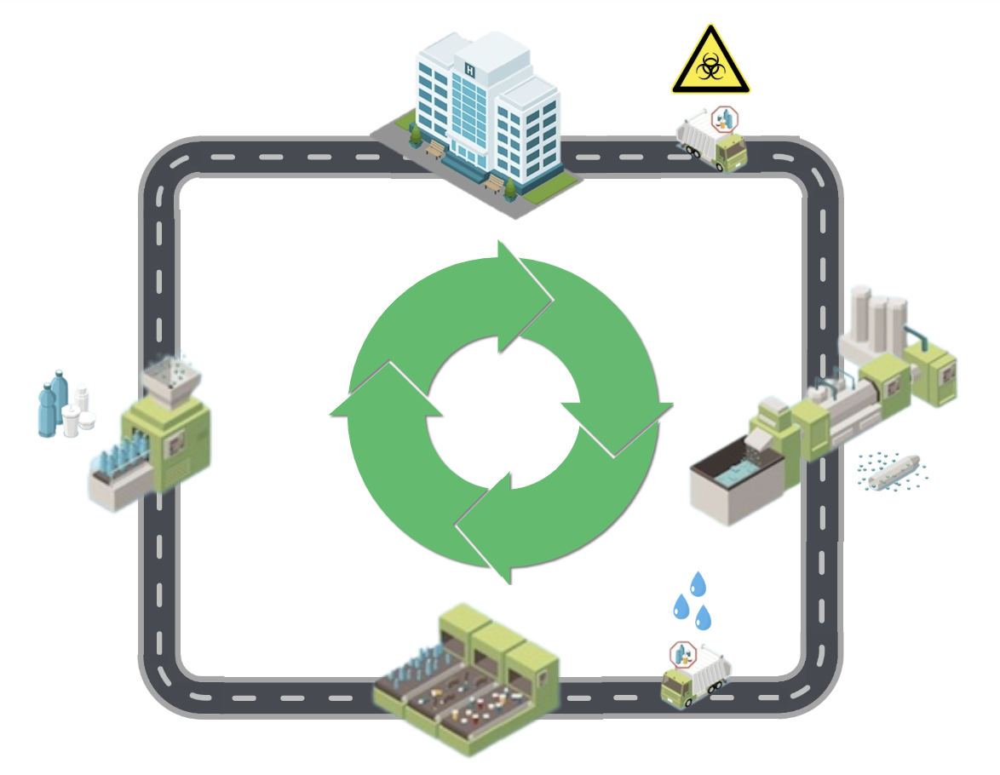
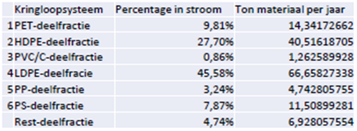
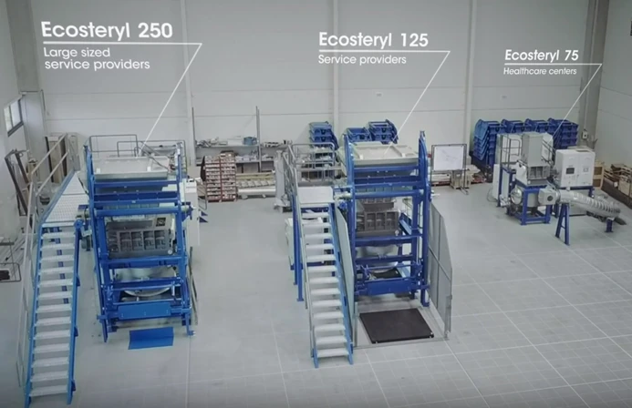
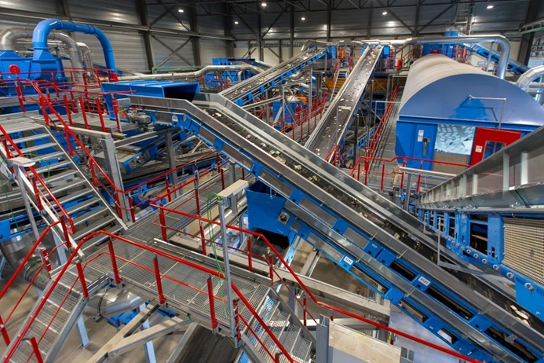
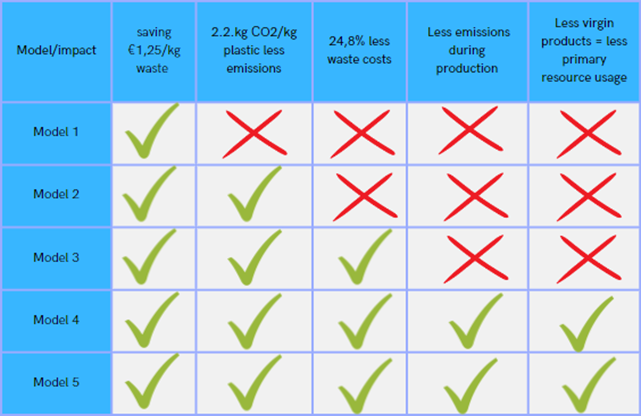

03 / Circular systems
Circular Healthcare
A regional system proposal for recovering hospital plastic waste and turning it into useful materials and products.

From a single recycled product to a system-wide opportunity
The project began with a brief to make a 3D-printed product from sterile PETG waste, such as a hook for managing cables beside a patient’s bed. I widened the question: a single product would use only a small part of the material stream. How could the hospital recover more of its plastic and create products that meet a wider range of needs?
The MCL report estimates about 146 tonnes of plastic waste each year. Around 4.5 tonnes are identified as clean PMD, while plastic classified as specific hospital waste (SZA) is generally incinerated because it may have been in contact with patients. The stream also contains several polymer types, so recovering it safely and turning it into useful material requires coordinated collection, treatment, sorting and production.
I framed the design challenge as a product-service system: make locally recovered hospital plastic useful again, while accounting for organisational capacity, technical requirements, people’s work and financial feasibility.

Fit the process around the hospital
Keep collection practical
Source-separating plastic inside the hospital could reduce treatment needs, but it would ask busy healthcare staff to change their routines and create more opportunities for sorting mistakes. The preferred concept keeps the existing collection system and separates materials later in the chain. Because the SZA stream may contain contaminated material, the proposal routes it through decontamination before further recycling.
Decontaminate and sort with specialist partners
Shredding is integrated with decontamination to reduce process hand-offs and limit exposure to untreated waste. The Ecosteryl 75 was selected for the concept because it can process mixed and single-polymer streams, offers a relatively high throughput and can be operated by one person. The report proposes outsourcing the next step: industrial sorting plants can separate the material into cleaner polymer streams, but their scale and investment make them difficult to include in a small local foundation.
Make products from recovered polymers
Injection moulding was chosen as a production route because it can process sorted granules at scale and switch between products by changing the mould. A PET cup was used as an example: the report notes that the MCL uses about 10,000 cups per week. The cup is an illustrative first product, while other products and materials would need further design and validation.


Bring treatment and production together in Grou
The report proposes a foundation in Grou, centrally located in Friesland, to receive plastic from the MCL and potentially other healthcare organisations. It would coordinate transport, decontamination and shredding, then arrange specialist sorting and use recovered granules to manufacture circular products. Keeping the local steps together could reduce hand-offs; the report estimates four transport legs, potentially combined into two trips when collection and delivery are coordinated.
The foundation is designed to cover operating costs and repay the equipment investment rather than maximise profit. After repayment, any surplus could support other sustainability initiatives. The proposal includes an Ecosteryl 75, an injection-moulding machine and moulds, a suitable site, trained operators and transport arrangements. The report presents an electric waste truck as one possible transport option.
The MCL’s own waste stream may not be enough to make the selected processing capacity attractive on its own. The regional model therefore depends on bringing in additional healthcare waste streams and securing practical agreements with processors, sorters, manufacturers and transport providers.


Make the investment and monthly operating costs visible
The report uses a Precious Plastics business-plan calculator to estimate the cost of setting up a foundation and processing the MCL’s waste stream. The figures below are early scenario estimates rather than supplier quotations. The listed start-up items add up to €1,742,859.30, while the calculator dashboard separately reports €1,777,942.06 needed to start; the report does not explain the €35,082.76 difference.
| Item | Estimated cost |
|---|---|
| Ecosteryl 75 | €360,000.00 |
| Injection-moulding machine | €66,000.00 |
| Cup moulds | €6,859.30 |
| Location in Grou | €1,000,000.00 |
| Volvo truck | €310,000.00 |
| Sum of listed items | €1,742,859.30 |
| Calculator dashboard: money needed to start | €1,777,942.06 |
| Measure | Estimate per month |
|---|---|
| Product and material sales revenue | €41,540.17 |
| Fixed operating costs | €25,292.83 |
| Wages | €9,789.23 |
| Material costs | €0.00 |
| Estimated monthly profit | €6,458.11 |
The calculator assumes an hourly wage of €21 and approximately 2.8 full-time employees. Material costs are set to zero because the foundation is paid to process the waste. Its sales model uses €2 per kilogram for recovered material, with PET cups as the example product. A later appendix gives €6,818.95 per month after adding savings from the current processor and a possible grant. That is a separate estimate and should not be read as the same operating-profit figure above.
Energy use is estimated from machine processing time and electricity prices; the report adds maintenance at 2% and consumables and spare parts at 1%. It also notes that Ecosteryl throughput is about 75–100 kg per hour. The payback analysis remains uncertain: the calculator labels the investment payback period “Too Long”, so the model depends on validating assumptions, securing additional waste streams and confirming grants and savings.
Give the hospital more than one way to start
A full regional system requires new contracts, equipment and partners. To lower that threshold, I compared five entry-level models with different levels of in-house responsibility. They range from processing only clean waste or outsourcing all SZA processing, to taking on shredding and decontamination locally, producing products in-house, or outsourcing the entire upstream chain and investing only in moulding.
- Start with clean waste. Process the existing clean PMD stream; this needs separation at the hospital and initially reaches only a limited share of the total plastic.
- Outsource all SZA processing. Keep hospital routines unchanged and work with a specialist processor, subject to changing the current waste contract.
- Bring some treatment steps in-house. Add shredding and decontamination locally, which requires a suitable site, equipment and the necessary approvals.
- Process and produce locally. Take on more of the chain and add injection moulding, while using a sorting partner to supply suitable polymer granules.
- Outsource treatment, make products locally. Send the waste stream to external processors and sorters, then use the recovered granules for in-house production.
These are proposals for discussion, not implemented operating models. The report compares their potential against material recovery, waste-cost savings and emissions; actual results depend on the chosen route, polymer mix, contracts and products.


Build the system with the people who can make it work
The project was developed with the MCL and Hartplastic, with NHL Stenden as part of the project context. A hospital visit, interviews and a presentation on the MCL’s waste stream helped define the day-to-day constraints. I also spoke with Cees Duijn, director of Innomax, and visited the company to understand its processing and sorting capabilities and the commercial relationships in the waste sector.
Innomax emerged as a promising partner because it can shred, decontaminate and sort medical plastic in one location. The report also maps possible decontaminators, sorters, producers, transport providers and grant organisations. Nijwa’s electric trucks were considered for transport; local manufacturers and other healthcare organisations could join if the model proved workable.
Stakeholder input also revealed barriers: the MCL and other hospitals were tied to existing waste contracts, the hospital did not have a suitable certified processing space, and several companies would not share prices before a collaboration was agreed. Those constraints shaped the proposal toward shared infrastructure and staged participation, while leaving cost and contract assumptions to be validated.

Make the opportunity measurable before scaling
The project connects the proposal to the MCL’s and Hartplastic’s circular-care ambitions and the Green Deal 3.0 targets: lower emissions, reduced use of primary raw materials and more awareness of healthcare’s environmental impact. The report and one-pager estimate potential benefits including €1.25 less processing cost per kilogram, 2.2 kg less CO₂ per kilogram of plastic when recycled rather than incinerated, and lower production emissions for circular products. The one-pager also estimates 24.8% lower waste costs and 42.5% lower emissions from circular production compared with virgin plastic production.
These are scenario estimates, not measured outcomes. They depend on the material stream, sorting quality, product choice, transport, contract changes and how the system is operated. The report’s business case is an early feasibility model based on MCL waste volumes and a limited product example; several prices were estimated because suppliers had not provided quotations.
Before implementation, partners would need to validate the volumes and costs, secure a site and required approvals, agree waste and sorting contracts, and test whether recovered materials meet the requirements of the intended products. The regional foundation is one route to investigate, rather than a finished or already operating service.